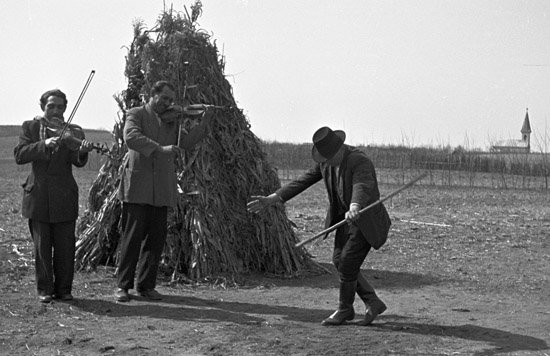
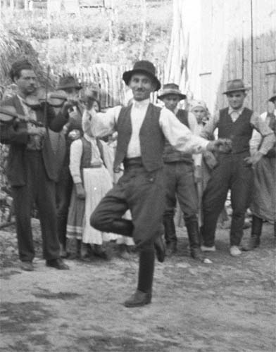
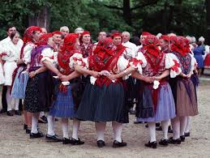
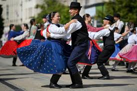
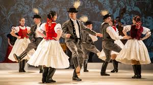

Népzene
A magyar népzenekutatás egy-egy népdal följegyzésével már évszázadokkal ezelőtt elindult, de ezek jelentéktelen egyedi esetek voltak csupán. A szervezett népzenegyűjtés 1896-ban indult Vikár Béla kezdeményezésére, aki a módszertani alapokat lefektette. Az ő nyomdokain haladt tovább Lajtha László, Bartók Béla és Kodály Zoltán. Nekik köszönhetően a magyar népzenekutatás a kezdetektől a világ legmagasabb színvonalán állt, és ez a kezdeti magas színvonala mind a mai napig megőrződött.
Néptánc
Európa és ezen belül Magyarország legkorábbi néptáncai a középkorban kialakult körtáncok voltak. A magyar néptánc szabályozott egyéni és páros formái a 17. és 19. század között keletkeztek. A tánctípusok közül a botoló, a legényes és a karikázó a régebbi, míg például a csárdás és a verbunkos az újabb táncstílust képviseli.
|  |
|  |
|  |
|  |
|  |